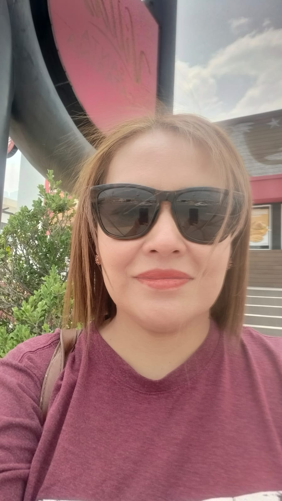

Adriana Yaneth Cruz Florencia
Mi Biografia

Mi nombre es Adriana Yaneth Cruz Florencia y nací en Monterrey, Nuevo León, el 19 de noviembre de 1981. Actualmente, estoy cursando el séptimo semestre de la carrera de Ingeniero en Sistemas Automotrices (IAS) en la Facultad de Ingeniería Mecánica y Eléctrica de la Universidad Autónoma de Nuevo León (UANL).
Familia
Estoy casada desde el 2001 con mi compañero de vida, quien siempre ha sido mi mayor apoyo en todos los aspectos de mi vida. Juntos hemos formado una hermosa familia. Tenemos dos hijos maravillosos que llenan nuestras vidas de alegría y amor todos los días. Ellos son mi motivación y mi razón para seguir aprendiendo y creciendo. Cada momento con ellos es invaluable, y me esfuerzo por ser una mejor persona y madre para guiarlos en su camino. Mi familia es mi mayor bendición.
Pasatiempo
En mis tiempos libres, me encanta sumergirme en un buen libro, disfrutando de historias que me transportan a mundos nuevos y me permiten aprender algo nuevo en cada página. También me gusta ver series, ya que me permiten relajarme y disfrutar de narrativas que me mantienen intrigada. Además, soy una apasionada de la fotografía. Me encanta capturar momentos especiales, ya sean pequeños detalles de la vida cotidiana o escenas que me parecen especialmente hermosas, y expresar a través de la cámara lo que siento en ese momento.
Me encanta conocer nuevos lugares, descubrir culturas diferentes y disfrutar de la belleza natural que el mundo nos ofrece. Viajar con mi familia es una de las experiencias más enriquecedoras para mí. Cada viaje no solo se trata de explorar destinos, sino de crear recuerdos inolvidables junto a ellos. ¡Esas son las aventuras que realmente aprecio!
"Actualmente, estoy tomando un curso de inglés y me encuentro en busca de prácticas profesionales en el área de redes de comunicación. Mi objetivo a corto plazo es obtener la certificación CCNA (Cisco Certified Network Associate), con el fin de fortalecer mis conocimientos y habilidades en la gestión de redes y dispositivos Cisco. Mi meta es seguir creciendo como especialista en redes, asi como concluir satisfactoriamente la Ingenieria y así poder integrarme al ámbito profesional.